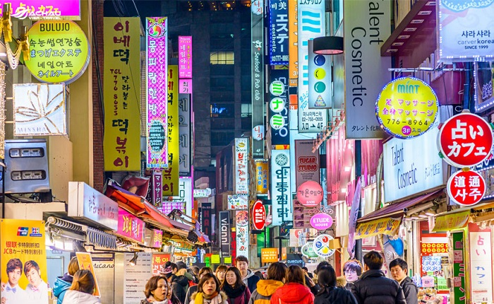

Du lịch Hàn Quốc
Welcome to Korea
Welcome to Korea
Trời đã về khuya, một gợi ý đến bạn đó là nhất định hãy ghé qua chợ đêm Dongaemun nhé. Bởi vì, khu chợ đêm ở Hàn Quốc này nổi tiếng với mặt hàng chợ đa dạng từ quần áo nam nữ, phụ kiện, giày dép và cả những cửa hàng ăn uống vô cùng hấp dẫn. Dongdaemun History & Culture Park Station là nơi có nhiều tòa nhà cao tầng chọc trời hội tụ nhiều cửa hàng thời trang, tha hồ để bạn lựa chọn.
Các cửa hàng tại khu chợ đêm ở Hàn Quốc này mở cửa từ 1h trưa cho tới 1h sáng. Ngoài ra, còn có một số cửa hàng khác mở cửa 24h/24h để chào đón, phục vụ du khách lui tới. Nếu bạn chọn chợ Dongdaemun làm điểm đến, bạn có thể thả ga mua sắm, thả phanh ăn uống mà không hết chỗ đi và cũng không lo bị gò bó về thời gian.
Ngoài ra, theo kinh nghiệm du lịch Hàn Quốc, tại lối exit 2 và exit 4 ở công viên Dongdaemun History & Culture Park Station, dưới những chiếc lều nhỏ nhắn màu vàng sáng trưng được bày bán rất nhiều mặt hàng từ quần áo đến phụ kiện nổi bật của Hàn Quốc vô cùng xinh xắn, tha hồ cho du khách chọn lựa và mua sắm.
Một khu chợ đêm ở Hàn Quốc hoạt động từ những năm 1964, được ví như một mê cung với rất nhiều ngõ tắt quanh co. Namdaemun lúc nào cũng náo nhiệt cả ngày lẫn đêm, đây là thế giới thời trang, ẩm thực thu nhỏ dành cho các vị khách trong nước và du khách quốc tế. Chợ đêm Namdaemun có tới hơn 10.000 cửa hàng, quầy bán hàng và những gánh hàng rong. Bạn có thể mua bất cứ thứ gì ở đây mà không cần phải lo lắng về bất cứ điều gì.
Đến với Namdaemun, bạn có thể thỏa sức mua sắm với mức giá ưu đãi hấp dẫn và thưởng thức những món ăn địa phương nổi tiếng. Có thế nói rằng, nơi đây mang đến đầy màu sắc cho du khách khám phá và đắm chìm trong văn hóa của Hàn Quốc. Hãy cùng bạn bè và gia đình đến khu chợ đêm ở Hàn Quốc này để khám phá và trải nghiệm nhé.
Ra đời từ những năm đầu của thế kỉ 20, Gwangjang là khu chợ đêm ở Hàn Quốc có tuổi đời lâu nhất tại thủ đô Seoul, là một trong những khu chợ cổ hiếm hoi còn sót lại. Chính vì thế, bạn sẽ cảm nhận được sự mộc mạc, chân thật của người dân Hàn Quốc. Đây là một điều đáng để bạn trải nghiệm đúng không nào!
Trang phục nổi bật ở nơi đây chính là hanbok, bộ quần áo truyền thống của người Hàn Quốc khiến giới trẻ thích thú cho tới tận ngày nay. Khu chợ nổi lên với vô vàn món ăn bản địa xứ kim chi có giá cả phải chăng.
Theo cẩm nang du lịch Hàn Quốc, khu chợ này mở cửa từ trưa cho đến khoảng 10h30 tối hàng ngày. Thời gian lý tưởng nhất để ghé thăm và khám phá khu chợ này đó là lúc 5h -10h tối. Đây là thời điểm mà khu chợ này đông đúc, tấp nập người ra người vào nhất từ những cửa hàng thời trang cho đến những điểm ăn uống đường phố sầm uất. Đối với những tín đồ mê shopping, mê đồ đẹp thì Myeongdong sẽ là khu chợ đêm ở Hàn Quốc nhất định phải ghé qua một lần.
Không chỉ có hai cửa hàng nổi tiếng lớn nhất là Lotte và Shinsegae, đường phố tại khu chợ đêm ở Hàn Quốc này tràn ngập các cửa hàng quần áo, từ các cửa hàng nhỏ đến các thương hiệu quốc tế lớn, tha hồ cho du khách chọn lựa. Không những là thời trang, mà ẩm thực ở đây cũng hết sức đa dạng, với hơn hàng chục quầy hàng bán đồ ăn Hàn Quốc trải dài trên các đường phố của Seoul.
Vào khung giờ từ 18h – 23h thứ 6 và thứ 7 hàng tuần, khu chợ đêm ở Hàn Quốc này mới hoạt động, nếu bạn có dự định tới đây khám phá, hãy thu xếp thời gian vào thời điểm cuối tuần để đi nhé. Hãy thử tượng tượng đến một buổi tối ngoài trời gần sông Hàn, các nghệ sỹ từ khắp nơi trên thế giới cùng nhau tạo nên một buổi biểu diễn hoành tráng, thật tuyệt vời phải không nào!
Tại đây là cả một thế giới ẩm thực phong phú cùng với những màn trình diễn nghệ thuật ấn tượng để bạn có được một chuyến đi với những trải nghiệm tuyệt vời và thú vị nhất. Tại đây, bạn có thể trải nghiệm không chỉ có đồ ăn mà còn là những màn biểu diễn truyền thống đến từ nhiều nền văn hóa trên thế giới để bạn thưởng thức mang đậm tính truyền thống và đậm bản chất văn hóa của từng quốc gia.
GỢI Ý TOUR DU LỊCH HÀN QUỐC |
|---|
>> Hà Nội – Hàn Quốc: Busan – Seoul 6 Ngày Bay Vietnam Airlines chỉ với 15.490.000 đồng
|
Nếu có cơ hội du lịch Hàn Quốc, đừng bỏ lỡ cơ hội được chiêm ngưỡng và mua sắm tại các khu chợ đêm ở Hàn Quốc vô cùng náo nhiệt này, bạn sẽ rất hối tiếc cho mà xem. Trên đây là danh sách top 5 khu chợ đêm sầm uất ở Hàn Quốc, hy vọng sẽ hữu ích trong chuyến du lịch sắp tới của du khách với Hàn Quốc. Đừng quên theo dõi tin tức du lịch Hàn Quốc để cập nhật những trải nghiệm thú vị nhé.
Top 20 điểm tham quan nhất định phải ghé thăm trong hành trình chinh phục Seoul

Điện thoại: 0903357616
Email: thaontps24690@fpt.edu.vn